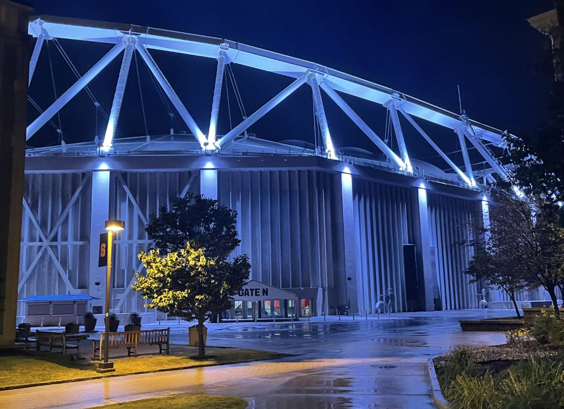
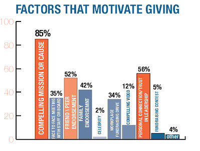

Mary Rickman / July 19th, 2022
Maureen Baginski is a very important women in the histiory of our government's intelligence. Baginski first worked at the NSA in 1979 and then moved on to work at the FBI in 2003. After she retired from the FBI she worked in a couple of companies in the private sector such as BearingPoint Inc. and Argon ST. In 1979 Baginski was a Russian language instructor during the Cold War at NSA. Later on she held many other positions in the NSA including, lead analyst for the Soviet Union, assistant deputy director of technology and systems, senior operations officer in the National Security Operations Center chief officer of the director, and executive assistant to the director of NSA’s Central Security Service, and SIGINT director.
On September 11, 2001, Maureen Baginski was the director of SIGINT and is recognized as being very critical to NSA’s response to the terrorist attacks. She also directed the Extended SIGINT Enterprise after the 9/11 attacks. In 2003, Baginski led the FBI’s first ever intelligence program. She is known as the first head of the FBI's Directorate of Intelligence. This new program was put in place to develop the FBI’s intelligence capabilities and identify threats across the world in order to prevent them from becoming attacks. Through her time in the FBI Baginski was recognized for making very significant changes to the FBI which improved its capabilities to safeguard the country. Maureen Baginski is a very extraordinary woman and has received many awards to prove it to the world, even though her work speaks for itself. She has received the Director of Military Intelligence’s Leadership Award, NSA’s exceptional Civilian Service Award, the FBI Intelligence Analysts Association Award, two Presidential Rank awards, and two Director of Central Intelligence National Achievement Medals.
Mary Rickman / July 19th, 2022
On our second day of class me and a partner made a teachable machine. A teachable machine is a web tool in which you can create a machine learning model really easily and people can access it. For my teachable machine we trained the machine to be able to recognize the difference between a monarch butterfly, a sonoran blue butterfly, and a purple hairstreak butterfly. We did this by inputting data from each species into the model. The way the machine works is that a user would be able to upload a picture of one of the three butterflies and the machine would show the user what species the butterfly is. The machine does this by giving a percentage of accuracy in which it detects each species. For example if a user were to upload a picture of the monarch butterfly the machine should predict with 100% accuracy that it is a monarch butterfly. Something that I learned is that with machine learning an abundance of data is ideal because it reduces the margin of error. So in the future I would definitely add more data and more variations, such as species, into the model.
GoogleMary Rickman / July 20th, 2022
Today we did a tech scavenger hunt where we went around campus to interview different people on campus who use technology and data in their daily lives. A few people I visited were the Vice Chancellor, Provost, and Chief Academic Officer of Syracuse University, Gretchen Ritter, the Director of Undergraduate Recruitment, Adrienne Graves, and Donna Adams who works in the Department of Public Safety. One of my favorite locations was the Department of Public Safety. This is because Donna Adams ended up showing us the control center of the department and it looked like a control center right out of a high tech movie.The Department of Public Safety uses technology to monitor the school and keep it safe 24 hours a day everyday. Adams told us that at least 2 people are in the center monitoring the cameras and any incoming calls. If there is a major event on campus then at least 4 people are manning the center. The Department of Public Safety is run of technology and collects data from all the cameras on campus to access threats and emergencies in the area.
One other special place I got to visit on the scavenger hunt was the Dome because it is one of my favorite buildings on campus. I learned there the immense amount of technology that is used to make the Dome function and be as cool as it is. A fun fact that Pete Sala told me was that the JMA Dome is the largest domed stadium in the Northeastern region of the US. A thing I love about the dome is the view at night.
Mary Rickman / July 21st, 2022
The IT Girls Summer Program is held in the School of Information Studies here at Syracuse University. So far the experience has been amazing and I'm learning something new every day. This video is very helpful on getting more information about the iSchool and what it provides for its students.
Mary Rickman / July 21st, 2022
Citizen Science is the involvement of the public in scientific research. With citizen science scientists are able to upload their projects to the world and get voluntary help from the public in order to improve their research. For example, me and my group rearched a project called Node Code Breakers. In this project researchers are trying to improve their A.I models that they used to identify germinal centers in the lymph nodes of breast cancer patients, which mean that the patient has an active immune system. An active immune system could cause a better prognosis. To do this they ask for the help of the public to look at pictures of lymph nodes and identify these germinal centers, so they can compare it to the identification produced by their A.I models. They are asking the public to do this in order to improve the A.I’s methods and further benefit cancer research. Another example is a project called Killer Whale Count, which is asking the public to count and identify killer whales in images taken at steller sea lions in the western region. This project's purpose is for scientists to better understand killer whale predation.
Mary Rickman / July 22nd, 2022
Cybersecurity is the practice of ensuring confidentiality, integrity, and availability of information. Today our speaker was Michele A. Washington, who talked to us about her job as a privacy officer and experiences in the cybersecurity field. She talked to us about threats such as phishing, mobile security threats, cloud storage threats, and insider threats. These threats are important to know about because these threats can come about at any time and can cause the loss of personal and important information.
In the future I think cybersecurity will include more AI and machine learning because for example, since Covid-19 began Michele Washington has been able to do her job at the pentagon from home. There will definitely be more technological capabilities in the future of cybersecurity. This is because there is a growing danger of threats today so, to account for that new technology will be created to prevent and tackle those threats. Another thing I think will expand in the field is the amount of people filling in the career gap. I believe this because Michele Washington showed us the new and beneficial programs and internships that get young people working in cybersecurity.
Mary Rickman / July 25th, 2022
The Bias or Bust activity today was to teach us about different types of bias and learn how to bust them using compelling data. For the activity we were split into two groups and had to find data from multiple sources to either support a bias or prove it wrong. To do this our speaker Jeanne Kambara pretended to be a six year old growing up and presented different biases and situations to us and each group had to get them to support either side based on her biases.
For example, one of the situations was that her parents had told them from an early age that the Earth was flat and one group had to support her mother’s view or disapprove it by finding sources that supported each one’s view. For this situation me and my group had to support that the world was flat. When finding sources to present we tried to find ones that appealed to her biases such as superheroes and pizza. We even made images of our own to appeal to our target audience, which was a six year old Jeanne who believed in everything her religious parents told her and loved pizza and superheroes.
Mary Rickman / July 26th, 2022
Data can be used in many different ways. One way that we learned today was storytelling. Data can be used to tell stories through charts or graphs. Our speaker, Qunfang Wu, spoke with us about what is storytelling through data visualization, what makes a good or bad chart or graph. Data can tell a story if it is detailed or structured correctly, for example the chart below is telling you a story. The chart below is telling a story of what factors motivate giving. It is doing this by providing compelling statistics, has an appropriate structure that is easy to comprehend, and even provides subsequent explanations for each statistic. This chart would be considered an example of good storytelling because the data provided and visuals given make the chart compelling.
Mary Rickman / July 28th, 2022
©2022